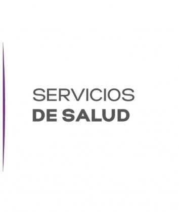
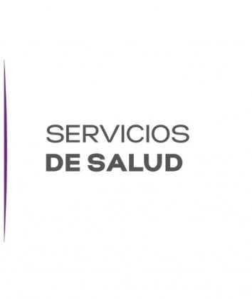
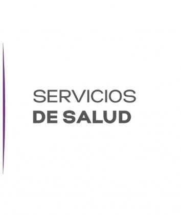
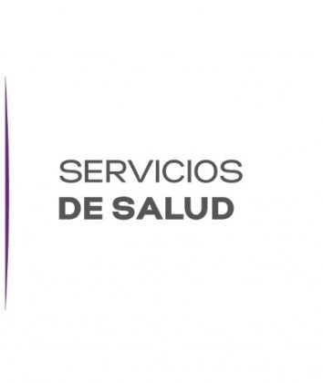

 

Correo electrónico Radiografias:
parresrayosx@gmail.com
contraseña:
rayosx*123
Av. Domingo Diez, Esq. Gómez Azcarate S/N, Col. Lomas de la Selva, Cuernavaca, Morelos. C.P. 62270. Tels. 101-34-00, Fax. 311-23-31